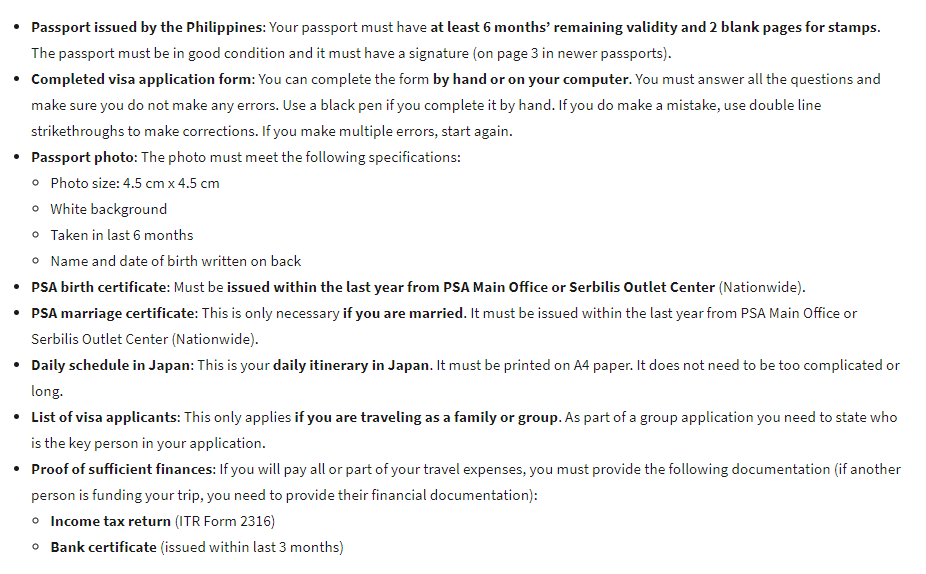
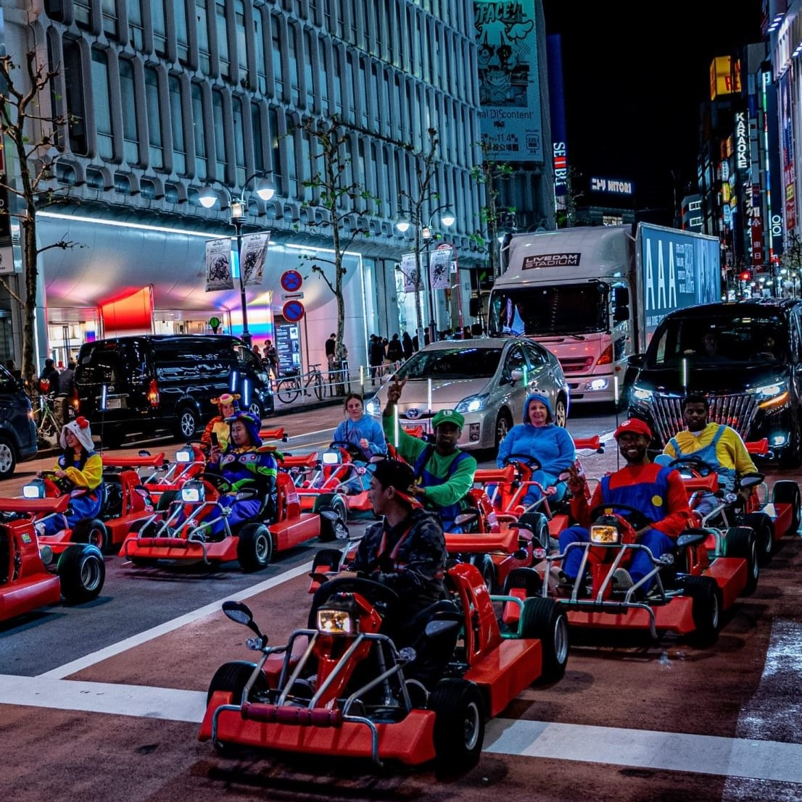
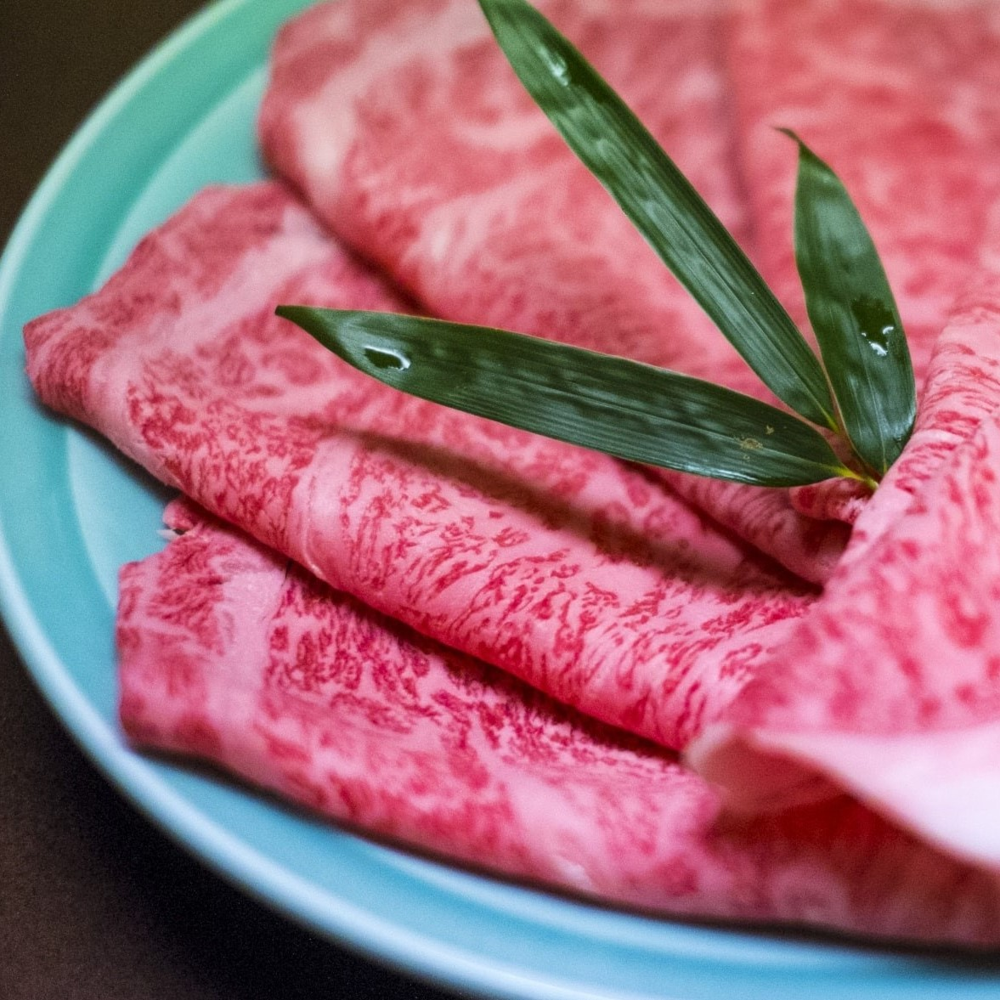

Tokyo (/ˈtoʊkioʊ/ TOH-kee-oh, /-kjoʊ/ -kyoh; Japanese: 東京, Tōkyō [toːkʲoː] officially the Tokyo Metropolis (Japanese: 東京都, Tōkyō-to), is the de facto capital and most populous prefecture of Japan. Located at the head of Tokyo Bay, the prefecture forms part of the Kantō region on the central Pacific coast of Japan's main island of Honshu. Tokyo is the political and economic center of the country, as well as the seat of the Emperor of Japan and the national government. As of 2021, the prefecture has an estimated population of 13,960,236. The Greater Tokyo Area is the most populous metropolitan area in the world, with more than 37.393 million residents as of 2020.
If you want to travel from Philippines to Tokyo, Japan here's a list of requirements that is required when traveling.
Go the happiest place on earth, Tokyo Disneyland
Ride a Go Kart Rental with costumes
or just eat a premium Wagyu beef.